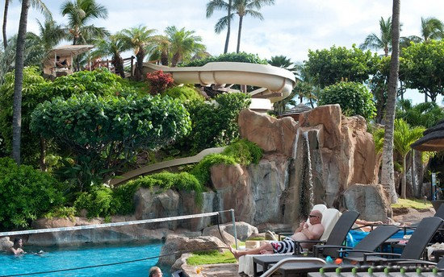

★Welcome on my first owm website that I created. ★I wish you will not judge me strick, because I am not professional in it. ★Anyway, I wish you will like and enjoy it★
Whitehaven Beach - Australia
Whitehaven Beach is known for its white sands. The Beach is a 7 km stretch along Whitsunday Island. The island is accessible by boat from the mainland tourist ports of Airlie Beach and Shute Harbour, as well as Hamilton Island. The Beach was named the top Eco Friendly Beach in the world by CNN.com. Dogs are not permitted on the beach and cigarette smoking is prohibited.

Westin Maui Resort & Spa Hawaii
A fantastic lobby with waterfalls and pools greets visitors to this lush Kaanapali resort where the impressive scenery, friendly service, fabulous spa and awesome swimming pools are the highlights. The Westin Maui Resort & Spa, Ka’anapali is located along a breathtaking stretch of the gorgeous, white-sand Ka’anapali Beach.
The Fairy Pools on the Isle of Skye - Scotland
If you are backpacking in Scotland generally or are planning a trip to the Isle of Skye then I heartily recommend that you visit the so-called Fairy Pools.The Fairy Pools is located in Cuillins Hills, Isle of Skye, Scotland. The Fairy Pools are a series of clear, cold pools and waterfalls formed as Allt Coir’ a’ Mhadaidh tumbles down from the foothills of the Black Cuillins into Glen Brittle.
Marble Caverns of Carrera Lake - Chile
Azure temple, Lake General Carrera in Patagonia, Chile, A natural wonder that could be the world’s most beautiful cave network. An Azure Temple created by nature, the walls of this network of water-filled marble caverns show just how magnificent the precious geography of our planet can be.